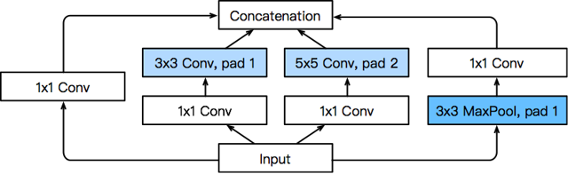
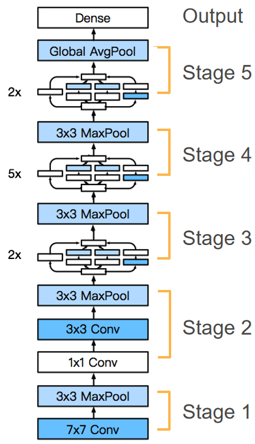
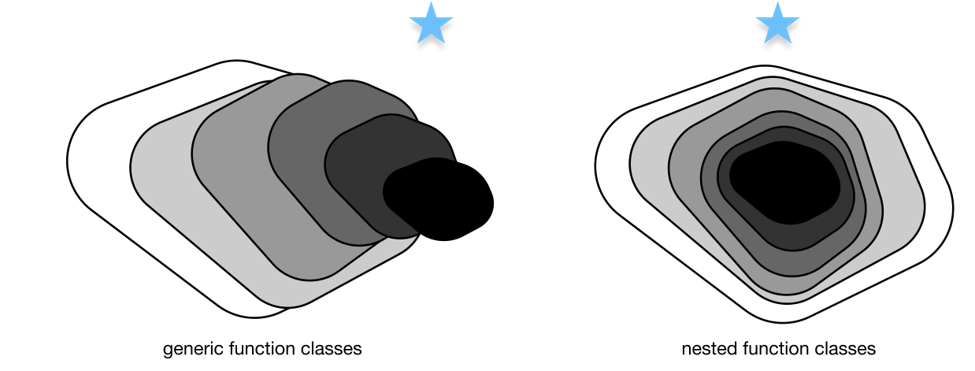
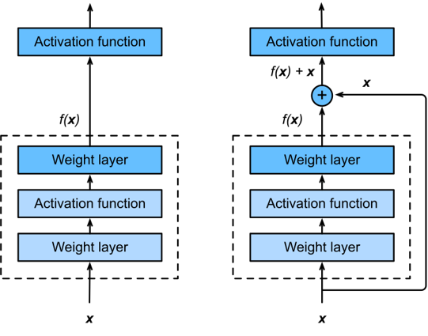

14.GoogLeNet、批量规范化、ResNet、DenseNet.md
内容概述：
- GoogLeNet
- 批量规范化
- ResNet
- DenseNet
14.1 GoogLeNet（含并行连结的网络）
14.1.1Inception块（核心组件）

Inception块是GoogLeNet的核心创新，通过四条并行路径提取不同尺度的特征，兼顾特征多样性和计算效率：
-
路径设计：
-
路径1：1×1卷积层（直接提取小尺度特征，减少计算量）；
-
路径2：1×1卷积层 → 3×3卷积层（先降维再提取中等尺度特征）；
-
路径3：1×1卷积层 → 5×5卷积层（先降维再提取大尺度特征）；
-
路径4：3×3最大池化 → 1×1卷积层（保留空间结构，同时调整通道数）。
-
-
关键技巧：
-
所有路径通过填充保证输出高/宽与输入一致；
-
最终在通道维度拼接四条路径的输出；
-
1×1卷积的核心作用：降维（减少后续卷积的计算量）、跨通道信息融合。
-
14.1.2GoogLeNet整体架构

-
结构特点：
-
由9个Inception块 + 卷积层/池化层串联组成；
-
用最大池化层降低特征图维度（替代全连接层的降维作用）；
-
最后使用全局平均池化层（AdaptiveAvgPool2d((1,1))）将每个通道压缩为1×1，避免全连接层的大量参数；
-
仅在最后接一个简单的全连接层输出分类结果（如Fashion-MNIST的10类）。
-
-
维度变化（以96×96输入为例）：
输入(1,1,96,96) → 经多轮Inception块/池化层 → 输出(1,1024) → 全连接层→(1,10)。
14.1.3GoogLeNet的核心优势
-
多尺度特征融合：不同大小的卷积核（1×1/3×3/5×5）捕捉不同范围的图像细节，提升特征表达能力；
-
高效计算：通过1×1卷积降维，在增加特征维度的同时控制整体计算复杂度（比VGG参数更少）；
-
避免过拟合：全局平均池化替代全连接层，减少参数数量，降低过拟合风险。
14.1.4训练注意事项
-
输入尺寸：原论文用224×224，为简化训练（如Fashion-MNIST）可缩放到96×96；
-
梯度稳定：早期版本需添加“辅助分类器”稳定训练，现代优化器（如SGD/Adam）可省略；
-
常见问题：训练中出现
loss nan通常是学习率过高（可调低lr，如0.01）或梯度爆炸，需配合梯度裁剪/批量归一化。
14.1.5关键点回顾
-
Inception块通过4条并行路径实现多尺度特征提取，1×1卷积是降维提效的核心；
-
GoogLeNet用全局平均池化替代全连接层，大幅减少参数和计算量；
-
整体思路：融合多尺度特征 + 高效计算设计，在精度和效率间取得平衡。
14.2 批量规范化
14.2.1批量规范化的核心目标
解决深层神经网络训练的三大痛点：
-
数据分布偏移：训练过程中中间层的输入分布随参数更新不断变化（内部协变量偏移），导致模型收敛慢、学习率难以调整；
-
梯度不稳定：深层网络中，靠前层的微小参数变化会被放大，导致梯度爆炸/消失；
-
正则化需求：辅助降低过拟合风险（小批量统计带来的噪声相当于弱正则化）。
14.2.2批量规范化的核心原理
- 核心公式：
对小批量数据 \(X\) 做标准化，再通过可学习的拉伸（ \(\gamma\) ）和偏移（ \(\beta\) ）参数恢复表达能力：
\(Y = \gamma \cdot \frac{X - \mu_B}{\sqrt{\sigma_B^2 + \epsilon}} + \beta\)
-
\(\mu_B\) ：小批量均值， \(\sigma_B^2\) ：小批量方差（加 \(\epsilon\) 避免除零）；
-
\(\gamma\) （初始1）、 \(\beta\) （初始0）：与模型参数一起训练，让网络自主决定是否保留标准化后的分布。
-
训练/预测模式差异：
| 模式 | 均值/方差来源 | 目的 |
|---|---|---|
| 训练 | 当前小批量的统计值 | 利用批量噪声做弱正则化 |
| 预测 | 训练过程中累积的移动平均 | 保证预测结果稳定 |
-
不同层的适配：
-
全连接层：对特征维度（dim=0）计算均值/方差；
-
卷积层：对通道维度（dim=1）计算均值/方差（所有空间位置共享同一套统计值）。
-
14.2.3批量规范化的实现要点
-
手动实现逻辑：
-
区分训练/预测模式（通过
torch.is_grad_enabled()）； -
维护移动均值/方差（
moving_mean/moving_var），用momentum平滑更新； -
适配全连接（2维）/卷积（4维）输入的维度计算。
-
-
框架原生API：
-
全连接层：
nn.BatchNorm1d(num_features)； -
卷积层：
nn.BatchNorm2d(num_channels)； -
无需手动维护移动均值/方差，框架自动处理。
-
-
使用位置：
通常放在卷积/全连接层之后、激活函数之前（如 LeNet 中：Conv → BatchNorm → Sigmoid）。
14.2.4批量规范化的实践价值
-
加速收敛：允许使用更大的学习率（如示例中 lr=1.0），训练速度提升显著；
-
稳定训练：降低对初始化、学习率的敏感度，更容易训练深层网络（如ResNet）；
-
弱正则化：小批量统计的噪声减少过拟合（但不能替代Dropout/权重衰减）；
-
争议点：原论文提出的“减少内部协变量偏移”并非核心原因，其有效性更多来自梯度稳定和正则化作用。
14.2.5关键注意事项
-
批量大小：小批量过小时（如batch_size=1），均值/方差无意义，批量规范化失效；
-
推理阶段：必须使用训练时累积的移动均值/方差（框架自动切换，无需手动干预）；
-
参数初始化： \(\gamma\) 初始为1、 \(\beta\) 初始为0，保证初始状态等价于“无批量规范化”。
14.2.6关键点回顾
-
批量规范化通过标准化小批量数据稳定中间层分布，加速深层网络收敛；
-
训练/预测模式使用不同的均值/方差来源，框架API已封装该逻辑；
-
核心价值是梯度稳定+弱正则化，“内部协变量偏移”并非其有效核心解释。
14.3 残差网络

14.3.1ResNet的核心动机
解决深层网络训练退化问题：

-
传统深层网络（如VGG）层数增加到一定程度后，训练误差和测试误差反而上升（并非过拟合，而是梯度消失/爆炸导致无法有效学习）；
-
核心假设：如果能让新增层轻松拟合恒等映射（ \(f(x)=x\) ），那么深层网络的性能至少不低于浅层网络，甚至更好；
-
实现思路：将“直接拟合目标映射 \(f(x)\) ”转为“拟合残差映射 \(f(x)-x\) ”（残差），当目标映射接近恒等映射时，残差映射只需拟合接近0的函数，更容易优化。
14.3.2残差块（Residual Block）—— ResNet的核心组件
-
结构设计：
-
基础版：2个3×3卷积层（同通道数、同分辨率） + 批量规范化 + ReLU，输入通过跨层捷径连接（shortcut） 直接加到第二个卷积层的输出上，最后接ReLU；
-
扩展版（调整通道/分辨率）：当需要改变输出通道数或减半分辨率时，捷径连接中加入1×1卷积层（调整输入的通道数和步幅），保证输入与卷积输出形状匹配以完成相加。
-
-
关键代码逻辑：
-
形状适配规则：
-
同形状：直接相加（use_1x1conv=False，strides=1）；
-
升通道+降分辨率：1×1卷积调整输入（use_1x1conv=True，strides=2）。
-
14.3.3ResNet整体架构（以ResNet-18为例）
- 分层设计：
| 模块 | 结构 | 输出形状变化（输入224×224） |
|---|---|---|
| b1 | 7×7卷积（64通道，stride=2）+ BN + ReLU + 3×3最大池化（stride=2） | 224×224 → 56×56（64通道） |
| b2-b5 | 4个残差块模块（每个模块2个残差块） | b2：56×56（64）→ b3：28×28（128）→ b4：14×14（256）→ b5：7×7（512） |
| 输出层 | 全局平均池化 + Flatten + 全连接层（10类） | 7×7×512 → 512 → 10 |
| 2. 核心特点： |
- 分辨率逐层减半，通道数逐层翻倍（64→128→256→512）；
- 所有卷积层后均接批量规范化，提升训练稳定性；
- 无全连接层（除最后输出），用全局平均池化减少参数，避免过拟合。
14.3.4ResNet的核心优势
-
解决梯度消失/爆炸：捷径连接为梯度提供“直通路”，梯度可直接从输出层传递到浅层，避免深层梯度趋近于0；
-
嵌套函数学习：保证深层网络至少能复现浅层网络的性能（只需让新增残差块拟合恒等映射），层数增加不会导致性能退化；
-
架构简洁：相比GoogLeNet的Inception块，残差块设计更简单，易于扩展（如ResNet-50/101/152仅需调整残差块内的卷积结构）。
14.3.5实践注意事项
-
批量规范化：残差块中卷积层后必须接BN，否则训练稳定性大幅下降；
-
捷径连接的形状匹配：必须保证相加的两个张量形状完全一致（通道数、高、宽）；
-
数据集适配：训练时需将输入resize到合适尺寸（如Fashion-MNIST resize到96×96，ImageNet用224×224）。
14.3.6关键点回顾
-
ResNet通过残差映射替代直接映射，解决深层网络训练退化问题，核心是“拟合残差 \(f(x)-x\) 比拟合 \(f(x)\) 更容易”；
-
残差块的跨层捷径连接是核心设计，既可以直接连接（同形状），也可通过1×1卷积调整形状（升通道/降分辨率）；
-
ResNet架构遵循“分辨率减半、通道数翻倍”的规律，结合批量规范化和全局平均池化，成为深层网络设计的经典范式。
14.4 DenseNet
14.4.1稠密连接网络（DenseNet）
14.4.1.1核心思想：从ResNet到DenseNet的进化

ResNet的核心是“残差连接”：将输入和输出相加（恒等映射 + 残差），公式为 \(H(x) = x + F(x)\) ，本质是把函数分解为“简单线性项 + 复杂非线性项”；
DenseNet则进一步，将每一层的输入与前面所有层的输出在通道维度拼接（concat），核心公式为：
\(x_l = H_l([x_0, x_1, ..., x_{l-1}])\)
其中 \([x_0, x_1, ..., x_{l-1}]\) 表示前面所有层的特征图在通道维度拼接，这种“每层都与之前所有层连接”的方式就是“稠密连接”，能更充分地复用特征。
14.4.1.2 DenseNet的两大核心组件
1. 稠密块（DenseBlock）
-
作用：实现核心的稠密连接，是DenseNet的特征提取单元；
-
结构：由多个“BN → ReLU → 3×3卷积”的卷积块组成；
-
关键细节：
-
每个卷积块的输入通道数 = 初始输入通道数 + 前面所有卷积块的输出通道数之和；
-
增长率（growth rate）：每个卷积块的输出通道数（代码中
num_channels），控制通道数的增长速度（比如增长率为32，4个卷积块的稠密块会增加128个通道）。
-
代码核心逻辑：
def forward(self, X):
for blk in self.net:
Y = blk(X)
# 通道维度拼接：当前输入X + 卷积块输出Y
X = torch.cat((X, Y), dim=1)
return X
2. 过渡层（Transition Block）
-
作用：解决稠密块导致的通道数持续膨胀问题，控制模型复杂度；
-
结构：BN → ReLU → 1×1卷积（降通道） → 2×2平均池化（降高/宽，步幅2）；
-
关键细节：
-
1×1卷积：将通道数减半（代码中
num_channels // 2），减少计算量； -
平均池化：将特征图的高和宽减半，进一步降低模型规模。
-
14.4.1.3 DenseNet完整模型结构
DenseNet的整体结构与ResNet类似，但用“稠密块+过渡层”替代了残差块，具体流程：
-
初始层：7×7卷积（步幅2）→ BN → ReLU → 3×3最大池化（步幅2）（与ResNet一致）；
-
主体层：4个稠密块，块之间插入过渡层（最后一个稠密块后无过渡层）；
-
输出层：BN → ReLU → 全局自适应平均池化（将特征图转为1×1） → Flatten → 全连接层（分类）。
核心流程示例（代码）：
# 初始层
b1 = nn.Sequential(
nn.Conv2d(1, 64, kernel_size=7, stride=2, padding=3),
nn.BatchNorm2d(64), nn.ReLU(),
nn.MaxPool2d(kernel_size=3, stride=2, padding=1))
# 4个稠密块+过渡层（最后一个块无过渡层）
num_channels, growth_rate = 64, 32 # 初始通道64，增长率32
num_convs_in_dense_blocks = [4, 4, 4, 4] # 每个稠密块4个卷积块
blks = []
for i, num_convs in enumerate(num_convs_in_dense_blocks):
blks.append(DenseBlock(num_convs, num_channels, growth_rate))
num_channels += num_convs * growth_rate # 更新通道数
if i != 3: # 前3个稠密块后加过渡层
blks.append(transition_block(num_channels, num_channels // 2))
num_channels = num_channels // 2
# 输出层
net = nn.Sequential(
b1, *blks,
nn.BatchNorm2d(num_channels), nn.ReLU(),
nn.AdaptiveAvgPool2d((1, 1)), # 全局池化
nn.Flatten(),
nn.Linear(num_channels, 10)) # 分类头
14.4.1.4 训练要点
-
为简化计算，通常将输入图片尺寸从224×224降到96×96；
-
优化器常用SGD，学习率初始设为0.1，训练过程中可按需衰减；
-
由于特征复用充分，DenseNet在小数据集（如Fashion-MNIST）上也能取得较好效果（测试准确率约88%+）。
14.4.1.5 总结
-
核心连接方式：DenseNet与ResNet的核心区别是“通道拼接”而非“特征相加”，实现每层与前面所有层的稠密连接，充分复用特征；
-
关键组件：稠密块实现特征复用（增长率控制通道增长），过渡层通过1×1卷积和平均池化控制模型复杂度（降通道、降尺寸）；
-
模型结构：初始层+4个稠密块（块间过渡层）+全局池化+全连接层，整体结构简洁且特征利用效率高。
14.5 总结
- GoogLeNet通过Inception块实现多尺度特征融合，采用全局平均池化减少参数，提升效率；
- DenseNet通过“稠密连接”实现特征复用，有效解决了梯度消失问题，在小数据集上也能取得较好效果。
- ResNet通过“残差连接”解决深层网络训练退化问题，核心是让新增层拟合残差映射，保证性能不退化。
- DenseNet的“稠密连接”机制使得特征复用更充分，模型规模更小，同时保持了较高的分类准确率。